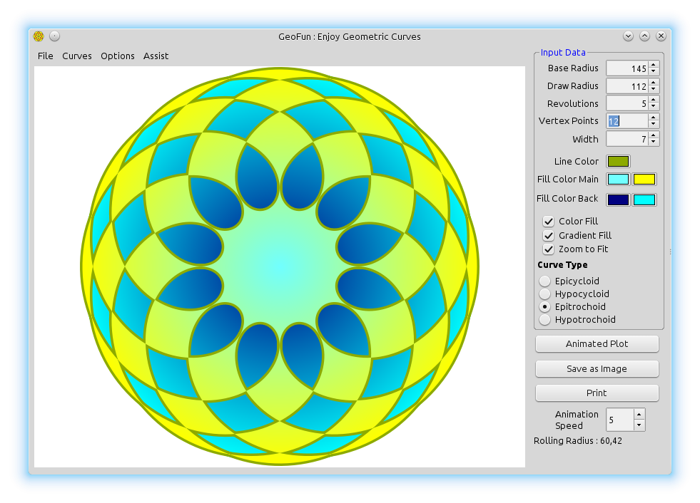

GeoFun
Spirograph Plotting
Description
Application that main goal is to provide GUI interface for exploring "Sprirographs".
More information about Spriographs can be found on Wikipedia.
Result

GeoFun.h
#ifndef _GeoFun_GeoFun_h
#define _GeoFun_GeoFun_h
#include <CtrlLib/CtrlLib.h>
#include <Painter/Painter.h>
#include <Report/Report.h>
#include <RichText/RichText.h>
#include <plugin/jpg/jpg.h>
namespace Upp {
#define IMAGECLASS GFImg
#define IMAGEFILE <GeoFun/GeoFun.iml>
#include <Draw/iml_header.h>
#define TOPICFILE <GeoFun/app.tpp/all.i>
#include <Core/topic_group.h>
#define LAYOUTFILE <GeoFun/GeoFun.lay>
#include <CtrlCore/lay.h>
bool cfgAvailable;
class DrawCanvas : public ParentCtrl {
typedef DrawCanvas CLASSNAME;
public:
virtual void Paint(Draw& drw);
DrawCanvas();
template <class T>
void DoPaint0(T& sw, int idraw = 0);
void DoPaint(Painter& sw);
struct ColorPolygon : Moveable<ColorPolygon> {
Vector<Pointf> point;
Vector<Pointf> CenR;
Color lcolor;
Color fcolorM1, fcolorM2;
int penwidth;
bool filled;
};
Vector<ColorPolygon> data;
Color fcolorB1, fcolorB2;
bool ShowGradient, ColorFill, Zoomed, ShowAnimation;
double Radius1, BaseR, RollR;
int ShowTo, AnimSpeed;
};
class GeoFun : public WithGeoFunLayout<TopWindow> {
public:
typedef GeoFun CLASSNAME;
GeoFun();
double ArmLen;
DrawCanvas dc1;
WithInputLayout<ParentCtrl> InputPane;
Splitter sp1;
QtfRichObject qtfim;
TimeCallback Animate;
int ValP, ValQ, PenW, CurvT, GradientY;
Color PenC, M1C, M2C, B1C, B2C;
bool First;
bool EpiCyclo, HypoCyclo, EpiTroch, HypoTroch, AnimMn;
// Functions
void About();
void Exit();
void FirstDraw();
Image GetImage();
void Help();
virtual void Layout();
void OptionColorFill();
void OptionGradient();
void OptionZoom();
void PrepareData();
void Print();
void SaveToImageFile(String fileName);
void SaveToAutoCadScript(String fileName);
void SaveToSVG(String fileName);
void SetAnimation();
void SetAnimationSpeed();
void SetCurveType(int CrvType);
void SetCurveTypeMenu(int CrvType);
void Serialize(Stream& s);
void ShowAnimated();
// Menu Functions
void MainMenu(Bar& menu);
void CurvesMenu(Bar& bar);
void FileMenu(Bar& bar);
void HelpMenu(Bar& bar);
void SettingsMenu(Bar& bar);
};
} // namespace Upp
#endif
GeoFun.cpp
#include "GeoFun.h"
using namespace Upp;
#define IMAGECLASS GFImg
#define IMAGEFILE <GeoFun/GeoFun.iml>
#include <Draw/iml_source.h>
// When idraw = 1 it will create image at actual size based on radius values
// Else image created to screen window diaplay size
template <class T>
void DrawCanvas::DoPaint0(T& sw, int idraw)
{
double x1, y1;
int cnt1, cnt2;
int RunTo;
Sizef sz;
if(idraw == 1) {
sz = Sizef(2 * Radius1 + 20, 2 * Radius1 + 20);
}
else {
sz = GetSize();
}
sw.Clear(White());
x1 = sz.cx / 2;
y1 = sz.cy / 2;
// Show color fill. Draw bacground circle with color
if(ColorFill) {
if(ShowGradient) {
sw.Ellipse(x1, y1, Radius1, Radius1).Fill(x1, y1, fcolorB1, Radius1, fcolorB2);
}
else {
sw.Ellipse(x1, y1, Radius1, Radius1).Fill(fcolorB1);
}
}
cnt1 = data.GetCount();
for(int i = 0; i < data.GetCount(); i++) {
Vector<Pointf>& p = data[i].point;
sw.Move(x1 + p[0].x, y1 + p[0].y);
cnt2 = p.GetCount();
// If animation flag set do incremental display of curve
// elase show all curve points.
RunTo = ShowAnimation ? ShowTo : cnt2;
if(RunTo > cnt2)
RunTo = cnt2;
for(int j = 1; j < RunTo; j++)
sw.Line(x1 + p[j].x, y1 + p[j].y);
sw.Stroke(data[i].penwidth, data[i].lcolor);
sw.EvenOdd(true);
if(ColorFill) {
if(ShowGradient) {
sw.Fill(x1, y1, data[i].fcolorM1, Radius1, data[i].fcolorM2, GRADIENT_REFLECT);
}
else {
sw.Fill(data[i].fcolorM1);
}
}
// Show if option animation set
if(ShowAnimation) {
sw.BeginOnPath(1.0);
sw.DrawImage(0, -GFImg::Bee().GetHeight() / 2, GFImg::Bee());
sw.End();
sw.Ellipse(x1, y1, BaseR, BaseR).Stroke(3, Blue());
sw.Ellipse(x1 + data[i].CenR[RunTo - 2].x, y1 + data[i].CenR[RunTo - 2].y, RollR,
RollR)
.Stroke(3, LtBlue());
sw.Move(x1, y1);
sw.Line(x1 + data[i].CenR[RunTo - 2].x, y1 + data[i].CenR[RunTo - 2].y);
sw.Line(x1 + data[i].point[RunTo - 2].x, y1 + data[i].point[RunTo - 2].y);
sw.Stroke(3, Red());
ColorFill = false; // this is required to stop colorfill if other options are
// changed during animation
}
}
}
DrawCanvas::DrawCanvas() {}
// at present this function is redundant but kept here to improve printing in future
void DrawCanvas::DoPaint(Painter& sw)
{
bool painting = false;
if(painting) {
PaintingPainter h(4000, 4000);
DoPaint0(h, 0);
sw.Paint(h);
}
else
DoPaint0(sw, 0);
}
void DrawCanvas::Paint(Draw& drw)
{
Size sz = GetSize();
ImageBuffer ib(sz);
BufferPainter sw(ib);
bool transparent = false;
DoPaint(sw);
drw.DrawImage(0, 0, ib);
}
Image GeoFun::GetImage()
{
Size sz = Size(int(dc1.Radius1 * 2 + 20), int(dc1.Radius1 * 2 + 20));
ImageBuffer ib(sz);
BufferPainter bp(ib, MODE_ANTIALIASED);
dc1.DoPaint0(bp, 1);
return Image(ib);
}
void GeoFun::SaveToImageFile(String fileName)
{
GuiLock __;
if(IsNull(fileName)) {
FileSel fs;
fs.Type("PNG file", "*.png");
fs.Type("JPEG file", "*.jpg");
if(!fs.ExecuteSaveAs(t_("Saving plot to PNG or JPEG file"))) {
Exclamation(t_("Plot has not been saved"));
return;
}
fileName = fs;
}
if(GetFileExt(fileName) == ".png") {
PNGEncoder encoder;
encoder.SaveFile(fileName, GetImage());
}
else if(GetFileExt(fileName) == ".jpg") {
JPGEncoder encoder(90);
encoder.SaveFile(fileName, GetImage());
}
else
Exclamation(Format(t_("File format \"%s\" not found"), GetFileExt(fileName)));
}
void GeoFun::SaveToAutoCadScript(String fileName)
{
if(IsNull(fileName)) {
FileSel fs;
fs.Type("SCR file", "*.scr");
if(!fs.ExecuteSaveAs(t_("Saving plot to Polyline -- AutoCAD Script "))) {
Exclamation(t_("Plot has not been saved"));
return;
}
fileName = fs;
}
if(GetFileExt(fileName) == ".scr") {
String sScr;
for(int i = 0; i < dc1.data.GetCount(); i++) {
sScr << "PLINE\n";
Vector<Pointf>& p = dc1.data[i].point;
for(int j = 0; j < p.GetCount(); j++)
sScr << p[j].x << "," << p[j].y << "\n";
sScr << "\nZ\nE\n";
}
FileOut fo;
fo.Open(fileName);
fo.Put(sScr);
fo.Close();
}
}
void GeoFun::SaveToSVG(String fileName)
{
if(IsNull(fileName)) {
FileSel fs;
fs.Type("SVG file", "*.svg");
if(!fs.ExecuteSaveAs(t_("Saving as SVG file "))) {
Exclamation(t_("SVG has not been saved"));
return;
}
fileName = fs;
}
if(GetFileExt(fileName) == ".svg") {
String sXML;
sXML.Clear();
sXML << "<?xml version=\"1.0\" standalone=\"no\"?>";
sXML << "<!DOCTYPE svg PUBLIC \"-//W3C//DTD SVG 1.1//EN\" ";
sXML << "\"http://www.w3.org/Graphics/SVG/1.1/DTD/svg11.dtd\">";
sXML << "<svg width=\"100%\" height=\"100%\" version=\"1.1\" ";
sXML << "xmlns=\"http://www.w3.org/2000/svg\"> \n \n";
for(int i = 0; i < dc1.data.GetCount(); i++) {
sXML << "\n<polygon points=\" ";
Vector<Pointf>& p = dc1.data[i].point;
for(int j = 0; j < p.GetCount(); j++)
sXML << Format("%0.4f", p[j].x) << "," << Format("%0.4f", p[j].y) << " ";
sXML << "\" style=\"fill:none;stroke:#00C000;stroke-width:0.4\" />\n";
}
sXML << "</svg>\n";
FileOut fo;
fo.Open(fileName);
fo.Put(sXML);
fo.Close();
}
}
void GeoFun::Print()
{
Report r;
String sQtf;
r.SetPageSize(4400, 4400);
Size sz = Size(4200, 4200);
Image im = GetImage();
qtfim = CreatePNGObject(im, Size(600, 600), sz);
sQtf << "[s0;= ";
sQtf << qtfim << " ]";
r << sQtf;
Perform(r);
}
// This function calculates curve data points for display
void GeoFun::PrepareData()
{
int p, q, pw;
double a, b, h;
double x, y;
double Period, step, t;
step = 1.0; // value in deg
int q1 = InputPane.edValP;
if(q1 > 0) {
p = InputPane.edValP;
}
else {
p = 1;
InputPane.edValP.SetData(p);
}
q1 = InputPane.edValQ;
if(q1 > 0) {
q = InputPane.edValQ;
}
else {
q = 1;
InputPane.edValQ.SetData(q);
}
q1 = InputPane.edPenWidth;
if(q1 > 0) {
pw = InputPane.edPenWidth;
}
else {
pw = 1;
InputPane.edPenWidth.SetData(pw);
}
Period = 2 * M_PI * p;
int iCrv = ~InputPane.CurveType;
if((iCrv == 1) || (iCrv == 3)) {
p = -p;
}
double tmp = InputPane.edBaseCircleRad;
if(tmp < 10) {
a = 10;
InputPane.edBaseCircleRad.SetData(a);
}
else {
a = InputPane.edBaseCircleRad;
}
b = (double)p * a / (double)q;
dc1.BaseR = a;
dc1.RollR = fabs(b);
if(iCrv < 2) {
h = fabs(b);
}
else {
tmp = InputPane.edArmLength;
if(tmp < 0) {
h = 0;
InputPane.edArmLength.SetData(h);
}
else {
h = InputPane.edArmLength;
}
}
dc1.Radius1 = fabs(a + b) + h;
InputPane.RollingRad = "Rolling Radius : " + Format("%0.2f", b);
dc1.Zoomed = InputPane.optZoom.GetData();
if(dc1.Zoomed) {
Size sz = dc1.GetSize();
double dmax = sz.cx;
if(sz.cy < dmax)
dmax = sz.cy;
dmax -= 10;
double zScale = fabs(dmax / (2 * dc1.Radius1));
a = a * zScale;
h = h * zScale;
b = b * zScale;
dc1.BaseR = a;
dc1.RollR = fabs(b);
dc1.Radius1 = fabs(a + b) + h;
}
dc1.data.Clear();
dc1.data.Add();
dc1.data[0].point.Clear();
dc1.data[0].CenR.Clear();
dc1.data[0].lcolor = ~InputPane.LineColor;
dc1.data[0].fcolorM1 = ~InputPane.FillColorM1;
dc1.data[0].fcolorM2 = ~InputPane.FillColorM2;
dc1.data[0].penwidth = pw;
dc1.fcolorB1 = ~InputPane.FillColorB1;
dc1.fcolorB2 = ~InputPane.FillColorB2;
dc1.ShowGradient = ~InputPane.optGradient;
dc1.ColorFill = ~InputPane.optColorFill;
int NumSteps = abs((int)(2.0 * (double)p * 180.0 / step)) + 1;
for(int i = 0; i < NumSteps; i++) {
t = (double)i / (double)NumSteps * Period;
x = (a + b) * cos(t) + h * cos(((a + b) / b) * t);
y = (a + b) * sin(t) + h * sin(((a + b) / b) * t);
Pointf p1;
p1.Clear();
p1.x = x;
p1.y = y;
dc1.data[0].point.Add(p1);
p1.Clear();
x = (a + b) * cos(t);
y = (a + b) * sin(t);
p1.x = x;
p1.y = y;
dc1.data[0].CenR.Add(p1);
}
Pointf p1;
p1.x = dc1.data[0].point[0].x;
p1.y = dc1.data[0].point[0].y;
dc1.data[0].point.Add(p1);
dc1.Refresh();
}
void GeoFun::ShowAnimated()
{
int MaxCnt = dc1.data[0].point.GetCount();
if(dc1.ShowAnimation) {
if(dc1.ShowTo < MaxCnt) {
dc1.Refresh();
dc1.ShowTo += dc1.AnimSpeed;
}
else {
dc1.ShowAnimation = false;
}
}
else {
Animate.Kill();
PrepareData();
}
}
void GeoFun::SetAnimation()
{
dc1.AnimSpeed = InputPane.edAnimSpeed.GetData();
dc1.ShowTo = 5;
dc1.ShowAnimation = dc1.ShowAnimation ? false : true;
dc1.ColorFill = false;
if(dc1.ShowAnimation) {
InputPane.btnShowAnimation.SetLabel("Stop Animation");
}
else {
InputPane.btnShowAnimation.SetLabel("Start Animation");
}
Animate.KillSet(-50, [=] { ShowAnimated(); });
}
void GeoFun::FirstDraw()
{
First = false;
PrepareData();
DUMP("First Draw");
}
void GeoFun::Serialize(Stream& s)
{
s % InputPane.edArmLength % InputPane.edBaseCircleRad % InputPane.edPenWidth
% InputPane.edValP % InputPane.edValQ
% InputPane.LineColor
% InputPane.FillColorM1 % InputPane.FillColorM2 % InputPane.FillColorB1 %
InputPane.FillColorB2
% InputPane.optGradient % InputPane.optColorFill % InputPane.CurveType %
InputPane.optZoom
% InputPane.edAnimSpeed;
SerializePlacement(s);
}
// Using layout to redraw on windows resize
void GeoFun::Layout()
{
if(!First) {
PrepareData();
}
TopWindow::Layout();
}
void GeoFun::About()
{
WithAboutLayout<TopWindow> dlg;
dlg.AboutText = GetTopic("topic://GeoFun/app/About$en-us").text;
CtrlLayoutOK(dlg, "About");
dlg.CenterScreen();
dlg.Run();
}
void GeoFun::Help()
{
HelpWindow helpme;
helpme.GoTo("topic://GeoFun/app/Help$en-us");
helpme.Execute();
}
void GeoFun::Exit() { Close(); }
void GeoFun::SetAnimationSpeed()
{
dc1.AnimSpeed = InputPane.edAnimSpeed.GetData();
if(dc1.AnimSpeed < 1)
dc1.AnimSpeed = 1;
if(dc1.AnimSpeed > 20)
dc1.AnimSpeed = 20;
InputPane.edAnimSpeed.SetData(dc1.AnimSpeed);
}
void GeoFun::OptionColorFill()
{
int i = InputPane.optColorFill.Get();
i = i ? 0 : 1;
InputPane.optColorFill.Set(i);
PrepareData();
}
void GeoFun::OptionGradient()
{
int i = InputPane.optGradient.Get();
i = i ? 0 : 1;
InputPane.optGradient.Set(i);
PrepareData();
}
void GeoFun::OptionZoom()
{
int i = InputPane.optZoom.Get();
i = i ? 0 : 1;
InputPane.optZoom.Set(i);
PrepareData();
}
void GeoFun::SetCurveType(int CrvType)
{
InputPane.CurveType.SetData(CrvType);
SetCurveTypeMenu(CrvType);
}
void GeoFun::SetCurveTypeMenu(int CrvType)
{
EpiCyclo = HypoCyclo = EpiTroch = HypoTroch = false;
switch(CrvType) {
case 1:
HypoCyclo = true;
break;
case 2:
EpiTroch = true;
break;
case 3:
HypoTroch = true;
break;
default:
EpiCyclo = true;
}
PrepareData();
}
// Menu Functions
void GeoFun::SettingsMenu(Bar& bar)
{
bar.Add(t_("Color Fill"), [=] { OptionColorFill(); })
.Check(dc1.ColorFill)
.Help(t_("Change settings"));
bar.Add(t_("Gradient Fill"), [=] { OptionGradient(); })
.Check(dc1.ShowGradient)
.Help(t_("Change settings"));
bar.Add(t_("Zoom Fit"), [=] { OptionZoom(); })
.Check(dc1.Zoomed)
.Help(t_("Zoom fit to window area"));
}
void GeoFun::FileMenu(Bar& bar)
{
bar.Add(t_("Save Image"), CtrlImg::save_as(), [=] { SaveToImageFile(""); })
.Help(t_("Save Image as PNG or JPG"));
bar.Add(t_("Save AutoCAD Script"), CtrlImg::save(), [=] { SaveToAutoCadScript(""); })
.Help(t_("Save as AutoCAD Script (.scr) file"));
bar.Add(t_("Save as SVG"), CtrlImg::save(), [=] { SaveToSVG(""); })
.Help(t_("Save as Scalable vector graphics (.svg) file"));
bar.Separator();
bar.Add(t_("Print"), CtrlImg::print(), [=] { Print(); })
.Help(t_("Print the image , will fit to A4 page"));
bar.Separator();
bar.Add(t_("Exit"), [=] { Exit(); }).Help(t_("Exit the application"));
}
void GeoFun::CurvesMenu(Bar& bar)
{
bar.Add(t_("Epicycloid"), [=] { SetCurveType(0); })
.Help(t_("Plot Epicycloid curve"))
.Check(EpiCyclo);
bar.Add(t_("Hypocycloid"), [=] { SetCurveType(1); })
.Help(t_("Plot Hypocycloid curve"))
.Check(HypoCyclo);
bar.Add(t_("Epitrochoid"), [=] { SetCurveType(2); })
.Help(t_("Plot Epitrochoid curve"))
.Check(EpiTroch);
bar.Add(t_("Hypotrochoid"), [=] { SetCurveType(3); })
.Help(t_("Plot Hypotrochoid curve"))
.Check(HypoTroch);
bar.Separator();
bar.Add(t_("Animated Plot"), [=] { SetAnimation(); })
.Help(t_("Show animation of the curve drawing"))
.Check(AnimMn);
}
void GeoFun::MainMenu(Bar& bar)
{
bar.Sub(t_("File"), [=](Bar& bar) { FileMenu(bar); });
bar.Sub(t_("Curves"), [=](Bar& bar) { CurvesMenu(bar); });
bar.Sub(t_("Options"), [=](Bar& bar) { SettingsMenu(bar); });
bar.Sub(t_("Assist"), [=](Bar& bar) { HelpMenu(bar); });
}
void GeoFun::HelpMenu(Bar& bar)
{
bar.Add(t_("About"), [=] { About(); }).Help(t_("About GeoFun"));
bar.Separator();
bar.Add(t_("Help"), CtrlImg::help(), [=] { Help(); }).Help(t_("Help GeoFun"));
}
GeoFun::GeoFun()
{
CtrlLayout(*this, "GeoFun : Enjoy Geometric Curves");
Icon(GFImg::gficon());
CtrlLayout(InputPane);
Sizeable().Zoomable();
InputPane.btnImg << [=] { SaveToImageFile(""); };
InputPane.btnPrint << [=] { Print(); };
InputPane.btnShowAnimation << [=] { SetAnimation(); };
Add(dc1.HSizePosZ(5, 160).VSizePosZ(25, 5));
Add(InputPane.RightPosZ(5, 150).VSizePosZ(2, 5));
BackPaint();
dc1.data.Clear();
// Check config file available else set default data
if(!cfgAvailable) {
InputPane.edArmLength.SetData(112);
InputPane.edBaseCircleRad.SetData(145);
InputPane.edPenWidth.SetData(3);
InputPane.edValP.SetData(5);
InputPane.edValQ.SetData(12);
InputPane.edAnimSpeed.SetData(5);
InputPane.LineColor.SetData(Blue());
InputPane.FillColorM1.SetData(LtGreen());
InputPane.FillColorM2.SetData(Yellow());
InputPane.FillColorB1.SetData(Blue());
InputPane.FillColorB2.SetData(LtCyan());
InputPane.optGradient.Set(1);
InputPane.optColorFill.Set(1);
InputPane.CurveType.SetData(2);
}
InputPane.CurveType.WhenAction
<< [=] { SetCurveTypeMenu((int)InputPane.CurveType.GetData()); };
InputPane.optGradient.WhenAction << [=] { PrepareData(); };
InputPane.optColorFill.WhenAction << [=] { PrepareData(); };
InputPane.FillColorB1.WhenAction << [=] { PrepareData(); };
InputPane.FillColorB2.WhenAction << [=] { PrepareData(); };
InputPane.FillColorM1.WhenAction << [=] { PrepareData(); };
InputPane.FillColorM2.WhenAction << [=] { PrepareData(); };
InputPane.LineColor.WhenAction << [=] { PrepareData(); };
InputPane.edPenWidth.WhenAction << [=] { PrepareData(); };
InputPane.edValP.WhenAction << [=] { PrepareData(); };
InputPane.edValQ.WhenAction << [=] { PrepareData(); };
InputPane.edArmLength.WhenAction << [=] { PrepareData(); };
InputPane.edBaseCircleRad.WhenAction << [=] { PrepareData(); };
InputPane.edAnimSpeed.WhenAction << [=] { SetAnimationSpeed(); };
InputPane.optZoom.WhenAction << [=] { PrepareData(); };
// Set timercallback to do first painting with calculations
// You can not call this directly from constructor
SetTimeCallback(200, [=] { FirstDraw(); });
dc1.ShowTo = 5; // start point of animation.
menu.Set([=](Bar& bar) { MainMenu(bar); });
dc1.ShowAnimation = false;
}
GUI_APP_MAIN
{
GeoFun gf;
gf.First = true;
String cfgfile = ConfigFile();
if(FileExists(cfgfile)) {
cfgAvailable = true;
if(!LoadFromFile(gf, cfgfile)) {
cfgAvailable = false;
Exclamation("Error loading configuration file!");
}
}
else {
cfgAvailable = false;
}
gf.Run();
StoreToFile(gf);
}
GeoFun.lay
LAYOUT(GeoFunLayout, 680, 484)
ITEM(MenuBar, menu, LeftPosZ(4, 536).TopPosZ(4, 20))
END_LAYOUT
LAYOUT(InputLayout, 150, 464)
ITEM(Upp::EditDoubleSpin, edBaseCircleRad, SetInc(5).AlignRight(true).LeftPosZ(84, 60).TopPosZ(16, 19))
ITEM(Upp::EditDoubleSpin, edArmLength, SetInc(5).AlignRight(true).LeftPosZ(84, 60).TopPosZ(36, 19))
ITEM(Upp::EditIntSpin, edValP, AlignRight(true).LeftPosZ(84, 60).TopPosZ(56, 19))
ITEM(Upp::EditIntSpin, edValQ, AlignRight(true).LeftPosZ(84, 60).TopPosZ(76, 19))
ITEM(Upp::EditIntSpin, edPenWidth, AlignRight(true).LeftPosZ(84, 60).TopPosZ(96, 19))
ITEM(Upp::Switch, CurveType, SetLabel(t_("Epicycloid\nHypocycloid\nEpitrochoid\nHypotrochoid")).LeftPosZ(8, 128).TopPosZ(260, 64))
ITEM(Upp::LabelBox, InputData, SetLabel(t_("Input Data")).LeftPosZ(4, 144).TopPosZ(0, 324))
ITEM(Upp::Option, optZoom, SetLabel(t_("Zoom to Fit")).LeftPosZ(12, 124).TopPosZ(224, 16))
ITEM(Upp::Option, optGradient, SetLabel(t_("Gradient Fill")).LeftPosZ(12, 124).TopPosZ(208, 16))
ITEM(Upp::Option, optColorFill, SetLabel(t_("Color Fill")).LeftPosZ(12, 124).TopPosZ(192, 16))
ITEM(Upp::ColorPusher, LineColor, LeftPosZ(84, 28).TopPosZ(124, 16))
ITEM(Upp::ColorPusher, FillColorM1, LeftPosZ(84, 28).TopPosZ(144, 16))
ITEM(Upp::ColorPusher, FillColorM2, HSizePosZ(112, 10).TopPosZ(144, 16))
ITEM(Upp::ColorPusher, FillColorB1, LeftPosZ(84, 28).TopPosZ(168, 16))
ITEM(Upp::ColorPusher, FillColorB2, HSizePosZ(112, 10).TopPosZ(168, 16))
ITEM(Upp::Label, dv___15, SetLabel(t_("Fill Color Back")).SetAlign(Upp::ALIGN_RIGHT).LeftPosZ(0, 76).TopPosZ(164, 20))
ITEM(Upp::Label, dv___16, SetLabel(t_("Fill Color Main")).SetAlign(Upp::ALIGN_RIGHT).LeftPosZ(0, 76).TopPosZ(144, 16))
ITEM(Upp::Label, dv___17, SetLabel(t_("Curve Type")).SetFont(Upp::StdFont().Bold()).LeftPosZ(8, 128).TopPosZ(240, 18))
ITEM(Upp::Label, dv___18, SetLabel(t_("Line Color")).SetAlign(Upp::ALIGN_RIGHT).LeftPosZ(0, 76).TopPosZ(124, 16))
ITEM(Upp::Label, dv___19, SetLabel(t_("Vertex Points")).SetAlign(Upp::ALIGN_RIGHT).LeftPosZ(0, 76).TopPosZ(72, 26))
ITEM(Upp::Label, dv___20, SetLabel(t_("Draw Radius")).SetAlign(Upp::ALIGN_RIGHT).LeftPosZ(0, 76).TopPosZ(32, 26))
ITEM(Upp::Label, dv___21, SetLabel(t_("Revolutions")).SetAlign(Upp::ALIGN_RIGHT).LeftPosZ(0, 76).TopPosZ(52, 26))
ITEM(Upp::Label, dv___22, SetLabel(t_("Base Radius")).SetAlign(Upp::ALIGN_RIGHT).LeftPosZ(8, 68).TopPosZ(12, 26))
ITEM(Upp::Label, dv___23, SetLabel(t_("Width")).SetAlign(Upp::ALIGN_RIGHT).LeftPosZ(0, 76).TopPosZ(96, 20))
ITEM(Upp::EditIntSpin, edAnimSpeed, LeftPosZ(84, 44).TopPosZ(412, 28))
ITEM(Upp::Label, dv___25, SetLabel(t_("Animation\nSpeed")).SetAlign(Upp::ALIGN_RIGHT).LeftPosZ(0, 76).TopPosZ(412, 28))
ITEM(Upp::Label, RollingRad, SetLabel(t_("Rolling Radius")).LeftPosZ(4, 140).TopPosZ(440, 20))
ITEM(Upp::Button, btnImg, SetLabel(t_("Save as Image")).HSizePosZ(4, 6).TopPosZ(356, 24))
ITEM(Upp::Button, btnPrint, SetLabel(t_("Print")).HSizePosZ(4, 6).TopPosZ(384, 24))
ITEM(Upp::Button, btnShowAnimation, SetLabel(t_("Animated Plot")).HSizePosZ(4, 6).TopPosZ(328, 24))
END_LAYOUT
LAYOUT(HelpDialogLayout, 400, 200)
END_LAYOUT
LAYOUT(AboutLayout, 480, 328)
ITEM(Upp::LabelBox, dv___0, SetLabel(t_("GeoFun")).HSizePosZ(4, 4).VSizePosZ(4, 28))
ITEM(Upp::RichTextCtrl, AboutText, HSizePosZ(8, 8).VSizePosZ(20, 32))
ITEM(Upp::Button, ok, SetLabel(t_("OK")).LeftPosZ(4, 472).BottomPosZ(5, 19))
END_LAYOUT
|


{kind=link}